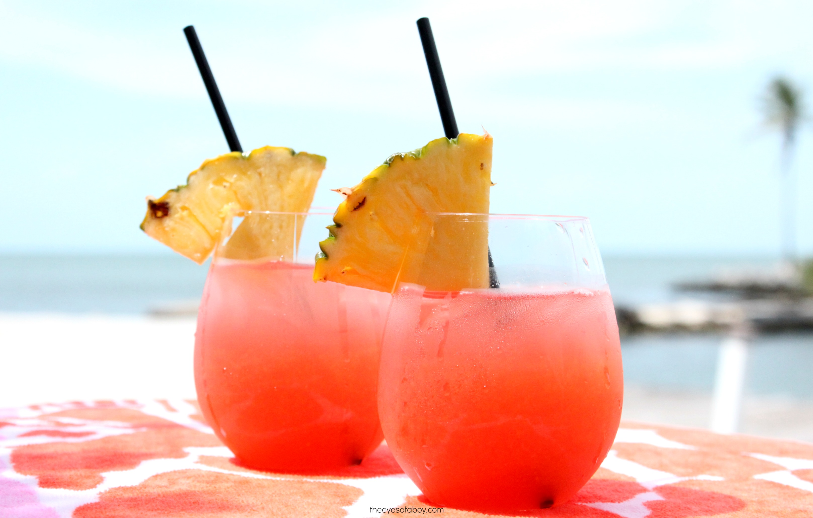

"RON PONCH"
O "ron" é um destilado da cana-de-açúcar e melaza de cana, e destilado em alambique de cobre e com pelo menos dois anos de "añejamiento" em barril de roble com 80º de conteúdo alcoólico.
Esta é uma bebida alcoólica autóctone do Caribe, as islhas e países dele, entre ellos Venezuela que tem uma tracição "ronera" e uma variedade de marcas reconhecidas internacionalmente.Das marcas de "ron" con prestigio internacional estão: Diplomático, Ron Santa Teresa e Pampero.
Em suas diferentes variedades, como o rum branco, escuro ou dourado, adaptam-se perfeitamente adequado para uso em um grande número de coquetéis, graças à sua versatilidadedeste destilado. O rum branco é o mais usado em coquetéis e mantém as corestípico do coquetel enquanto, por outro lado, se usarmos rum escuro ou dourado,ele escurecerá. O coquetel. Em seguida, deixamos uma receita de coquetel com álcoolmais conhecidoe de elaboração simples com a receita correspondente.
Sobre o Coquetel
O "punch" Ti ou pequeno "punch". É um coquetel muito típico das ilhas do Caribe francês, o nome em castelhano seria soco, como a maioria dos coquetéis do Caribe, é feito de rum. Embora não seja apenas qualquer rum, de preferência um rum agrícola típico das ilhas Martinica e Guadalupe. Sua preparação é muito semelhante ao daiquiri.
Ingredientes
- 1 copo de rum escuro (de preferência venezuelano).
- 1 copo de rum branco.
- 1/4 de xícara de rum Malibu Coco.
- 2 copos de suco de abacaxi.
- 2 copos de suco de laranja.
- 2 copos de suco de limão.
- 4 colheres de sopa de xarope de granadina.
- Gelo em cubos.
Modo de Preparação
- Misture e agite os rum e os sucos juntos em uma batedeira.
- Em seguida, deslize o xarope de granadina para baixo de um lado do copo.
- Despeje a mistura sobre o cubo de gelo em cada copo.